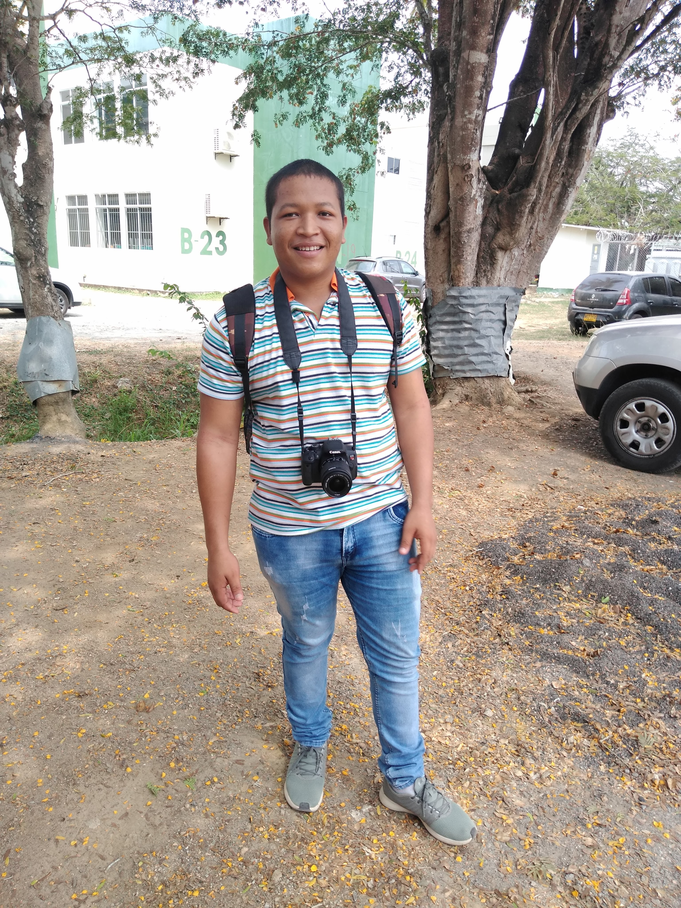

Curriculum Vitae
Descripción Personal
Mi nombre es Carlos Julián Ramos González, soy de montería, Córdoba Colombia tengo 20 años, vivo en esta ciudad tengo una hermana y vivo con mi madre y mis abuelos, soy de estatura media, cabello castaño oscuro y de contestura gruesa.
Educación
Soy bachiller académico de Instrucción Educativa la Ribera de montería y actualmente estoy estudiando Licenciatura en informática con énfasis en medios audiovisuales, en la Universidad de Córdoba.
Experiencias Laborales
No he trabajado, así que no tengo experiencia laboral.
Skills
Las habilidades que tengo, por el momento son editar videos, programar en javascript, python y c++.
Foto
Hobbies
Mis pasatiempos favoritos son leer manga, ver anime, peliculas de acción o comedia, programar y editar videos.